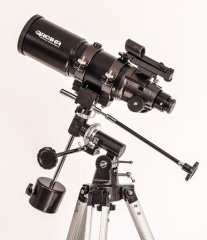
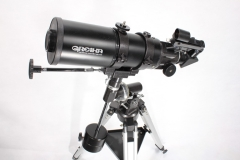
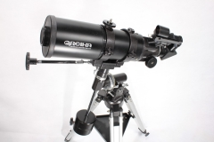
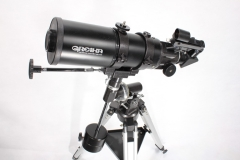

Galeria de Imagens
 


Telescópio Greika BT 40080 equatoriano com objetiva de 80mm e distância focal de 400mm. Caracteriza-se especialmente pela junção de duas excelentes características, uma de distância focal de alta qualidade e a outra de excelente montagem equatorial possibilitando a observação detalhada do sistema solar e terrestre, com material de última geração especificadamente desenhados para o conforto do usuário. Este telescópio também vem com mira a lazer para quem gosta de observações de animais, pesca, montanhismo e esportes. Dicas de Uso Telescópio Greika BT40080 EQ : Formula para calcular a amplitude desse telescópio: Dividir a distância focal (400) pela ocular. Quando se usa a barlow de 2x em conjunto com as oculares, basta multiplicar o aumento obtido por 2. Os aumentos são relacionados diretamente com o tipo de ocular que é utilizada. Quanto menor o diâmetro, maior a ampliação. Os cálculos são baseados nas oculares que acompanham o produto. Como regra geral para ser utilizado com qualquer telescópio: Utilize os maiores aumentos somente com objetos de definição absoluta. Variações na estabilidade do ar PODEM DIFICULTAR A VISIBILIDADE PRECISA DE OBJETOS CELESTES. EXPERIMENTE TROCAR AS LENTES OCULARES, DE ACORDO COM AS CONDIÇÕES DE VISIBILIDADE ENCONTRADAS NA HORA DA OBSERVAÇÃO; ELAS FUNCIONAM COMO INSTRUMENTO DE AUXILIO NA OBTENÇÃO DE IMAGENS CLARAS E PRECISAS.
Em até 3x de R$926,80
